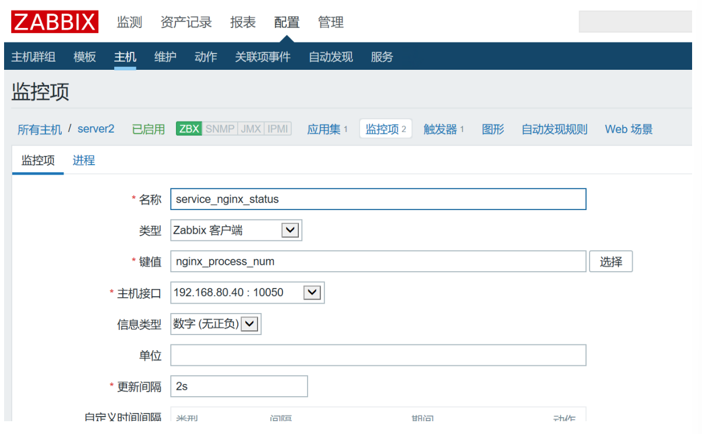

Zabbix企业级监控方案 常见监控软件介绍 Cacti Cacti 是一套基于 PHP、MySQL、SNMP 及 RRD Tool 开发的监测图形分析工具，Cacti 是使用轮询 的方式由主服务器向设备发送数据请求来获取设备上状态数据信息的,如果设备不断增多,这个轮询的过程就非常的耗时 ，轮询的结果就不能即时的反应设备的状态了。Cacti 监控关注的是对数据的展示 ，却不关注数据异常后的反馈。如果凌晨 3 点的时候设备的某个数据出现异常，除非监控人员在屏幕前发现这个异常变化，否则是没有任何报警机制能够让我们道出现了异常。
Nagios Nagios 是一款开源 的免费网络监控报警服务,能有效监控 Windows、Linux 和 Unix 的主机状态， 交换机、路由器和防火墙等网络设置，打印机、网络投影、网络摄像等设备。在系统或服务状态异 常时发出邮件或短信报警第一时间通知运维人员，在状态恢复后发出正常的邮件或短信通知。 Nagios 有完善的插件功能,可以方便的根据应用服务扩展功能。
Nagios 已经可以支持由数万台服务器或上千台网络设备组成的云技术平台的监控,它可以充分发挥 自动化运维技术特点在设备和人力资源减少成本。只是 Nagios 无法将多个相同应用集群 的数据集 合起来,也不能监控到集群中特殊节点的迁移和恢复。
Ganglia Ganglia 是 UC Berkeley 发起的一个开源集群监视项目,设计用于测量数以千计的节点。Ganglia 的 核心包含 gmond、gmetad 以及一个 Web 前端。
主要是用来监控系统性能,如:CPU 、内存、硬盘利用率, I/O 负载、网络流量情况等,通过曲线很容易 见到每个节点的工作状态,对合理调整、分配系统资源,提高系统整体 性能起到重要作用,目前是监控 HADOOP 的官方推荐服务。
Zabbix Zabbix 是一个基于 WEB 界面 的提供分布式系统监视以及网络监视功能的企业级的开源解决方案。 zabbix 能监视各种网络参数,保证服务器系统的安全运营;并提供灵活的通知机制以让系统管理员快 速定位/解决存在的各种问题。
Zabbix 是由 Alexei Vladishev 创建，目前由 Zabbix SIA 在持续开发和支持。
Zabbix 是一个企业级的分布式开源监控方案。
Zabbix 是一款能够监控各种网络参数以及服务器健康性和完整性的软件。
Zabbix 使用灵活的通知机制，允许用户为几乎任何事件配置基于邮件的告警。这样可以快速反馈服务器的问题。基于已存储的数据，Zabbix提供了出色的报告和数据可视化功能。这些功能使得 Zabbix成为容量规划的理想方案。
Zabbix 支持主动轮询和被动捕获。
Zabbix所有的报告、统计信息和配置参数都可以通过基于Web的前端页面进行访问。基于Web的 前端页面可以确保您从任何方面评估您的网络状态和服务器的健康性。
Zabbix是免费的。Zabbix是根据GPL通用公共许可证第2版编写和发行的。这意味着它的源代码都 是免费发行的，可供公众任意使用, 商业支持由Zabbix公司提供。
监控区别 nagios 图形不是特别好，也可以安装图形插件，但是也不怎么好看
nagios 一般情况下如果需要图形可以和 cacti 配合使用
cacti 的监控是轮询监控,效率低，图形相对 nagios 比较好看
zabbix 和 nagios 因为是并发监控，对 cpu 的要求更高
zabbix 在性能和功能上都强大很多
zabbix 的图形相当漂亮
支持多种监控方式 zabbix-agent snmp 等等
支持分布式监控,能监控的 agent 非常多
zabbix 有图形的 web 配置界面，配置简洁
zabbix 支持自动发现功能
Zabbix监控简介 zabbix优点 开源,无软件成本投入
Server 对设备性能要求低
支持设备多,自带多种监控模板
支持分布式集中管理,有自动发现功能,可以实现自动化监控
开放式接口,扩展性强,插件编写容易
当监控的 item 比较多服务器队列比较大时可以采用主动状态,被监控客户端主动 从server 端去下载 需要监控的 item 然后取数据上传到 server 端。 这种方式对服务器的负载比较小。
Api 的支持,方便与其他系统结合
zabbix缺点 需在被监控主机上安装 agent ,所有数据都存在数据库里, 产生的数据很大,瓶颈主要在数据库。
项目批量修改不方便
社区虽然成熟，但是中文资料相对较少，服务支持有限;
入门容易，能实现基础的监控，但是深层次需求需要非常熟悉Zabbix并进行大量的二次定制开发难度较大
系统级别报警设置相对比较多，如果不筛选的话报警邮件会很多；并且自定义的项目报警需要自己设置，过程比较繁琐；
缺少数据汇总功能，如无法查看一组服务器平均值，需进行二次开发；
zabbix组件结构 Zabbix_Server：整个监控体系中最核心 的组件，它负责接收客户端发送的报告信息，所有配置、 统计数据及操作数据都由它组织。
数据库存储：所有配置信息和Zabbix收集到的数据都被存储在数据库中。
Web界面：为了从任何地方和任何平台都可以轻松的访问Zabbix, 我们提供基于Web的Zabbix界 面。该界面是 Zabbix Server的一部分，通常跟Zabbix Server运行在同一台物理机器上（！如果使 用SQLite,Zabbix Web界面必须要跟Zabbix Server运行在同一台物理机器 上。）
Zabbix_Proxy（可选 ）：用于监控节点非常多的分布式环境中，它可以代理zabbix-server的功 能，减轻zabbixserver的压力。
Zabbix_Agent：zabbix-agent为客户端软件，用于采集各监控项目的数据，并把采集的数据传输给 zabbixproxy或zabbix-server。
zabbix监控方式 被动模式：
被动检测：相对于agent而言；agent, server向agent请求获取配置的各监控项相关的数据 ， agent接收请求、获取数据并响应给server； 主动模式
主动检测：相对于agent而言；agent(active),agent向server请求与自己相关监控项配置，主 动地将server配置的监控项相关的数据发送给server； 主动监控能极大节约监控server 的资源。 Zabbix架构
Zabbix常用术语 主机：一台你想监控的网络设备，用IP或域名表示
主机组：主机的逻辑组；它包含主机和模板。一个主机组里的主机和模板之间并没有任何直接的关联。通常在给不同用户组的主机分配权限时候使用主机组。
监控项：你想要接收的主机的特定数据，一个度量数据。
触发器：一个被用于定义问题阈值和“评估”监控项接收到的数据的逻辑表达式当接收到的数据高于 阈值时，触发器从“OK”变成“Problem”状态。当接收到的数据低于阈值时，触发器保留/返回一个 “OK”的状态。
Zabbix部署 安装zabbix 服务端 参考网址：https://www.zabbix.com/cn/download?zabbix=4.0&os_distribution=centos&os_version=7&db=mysql&ws=apache
1 2 [root@server1 ~]
1 2 [root@server1 ~]
准备数据库 1 2 3 [root@server1 ~]
1 2 3 4 mysql> create database zabbix character set utf8 collate utf8_bin;
修改服务的配置 1 2 [root@server1 ~]
1 2 [root@server1 ~]
1 2 3 4 5 6 7 8 [root@server1 ~]
1 2 [root@server1 ~]
客户端配置 1 2 [root@server1 ~]
1 2 3 [root@server1 ~]
快速使用 简单监控一个主机 添加一个主机
添加模板
添加应用集
添加监控项
观察主机是否变绿色
自定义配置监控项 1 2 3 4 5 6 [root@server2 ~]$1
1 2 3 [root@server1 ~]

redis相关的自定义监控项 1 2 3 4 5 6 7 8 9 10 11 12 13 14 15 16 17 18 19 20 21 22 23 vim /usr/local/zabbix/etc/zabbix_agentd.conf.d/redis.conf$1 -p $2 info | grep -w "connected_clients" | awk -F':' '{print $2}' $1 -p $2 info | grep -w "used_memory_rss" | awk -F':' '{print $2}' $1 -p $2 info | grep -w "used_memory_lua" | awk -F':' '{print $2}' $1 -p $2 info | grep -w "used_cpu_sys" | awk -F':' '{print $2}' $1 -p $2 info | grep -w "used_cpu_user" | awk -F':' '{print $2}' $1 -p $2 info | grep -w "used_cpu_sys_children" | awk -F':' '{print $2}' $1 -p $2 info | grep -w "used_cpu_user_children" | awk -F':' '{print $2}' $1 -p $2 info | grep -w "$$1 " | grep -w "keys" | grep db$3 | awk -F'=' '{print $2}' | awk -F',' '{print $1}' $1 -p $2 info | grep loading | awk -F':' '{print $$2}'
nginx相关的自定义监控项 1 2 3 4 5 6 7 8 9 10 11 12 13 14 15 16 17 18 vim /etc/nginx/conf.d/default.conf"http://127.0.0.1:80/nginx-status" | awk '/Active/ {print $NF}' read ,/usr/bin/curl -s "http://127.0.0.1:80/nginx-status" | grep 'Reading' | cut -d" " -f2"http://127.0.0.1:80/nginx-status" | grep 'Writing' | cut -d" " -f4wait ,/usr/bin/curl -s "http://127.0.0.1:80/nginx-status" | grep 'Waiting' | cut -d" " -f6"http://127.0.0.1:80/nginx-status" | awk '/^[ \t]+[0-9]+[ \t]+[0-9]+[ \t]+[0-9]+/ {print $1}' "http://127.0.0.1:80/nginx-status" | awk '/^[ \t]+[0-9]+[ \t]+[0-9]+[ \t]+[0-9]+/ {print $2}' "http://127.0.0.1:80/nginx-status" | awk '/^[ \t]+[0-9]+[ \t]+[0-9]+[ \t]+[0-9]+/ {print $3}'
TCP相关的自定义监控项 1 2 3 4 5 6 7 8 9 10 11 12 13 14 15 16 17 18 19 20 vim /usr/local/zabbix/share/zabbix/alertscripts/tcp_connection.shfunction ESTAB {'{++s[$1]} END {for(k in s) print k,s[k]}' | grep 'ESTAB' | awk '{print $2}' function TIMEWAIT {'{++s[$1]} END {for(k in s) print k,s[k]}' | grep 'TIME-WAIT' | awk '{print $2}' function LISTEN {'{++s[$1]} END {for(k in s) print k,s[k]}' | grep 'LISTEN' | awk '{print $2}' $1 $1
系统监控的自带选项 1 2 3 4 5 6 7 8 9 10 11 12 13 14 15 16 17 18 19 agent.ping 检测客户端可达性、返回nothing表示不可达。1表示可达history 需指定为3history 需指定为3history 需指定为0history 需指定为0history 需指定为0
系统监控的自定义监控选项 1 2 3 4 5 6 7 8 9 10 11 12 13 14 15 16 17 18 19 20 21 22 23 24 25 26 27 '/^$1:{print $2}' function ESTAB {'{++s[$1]} END {for(k in s) print k,s[k]}' | grep 'ESTAB' | awk '{print $2}' function TIMEWAIT {'{++s[$1]} END {for(k in s) print k,s[k]}' | grep 'TIME-WAIT' | awk '{print $2}' function LISTEN {'{++s[$1]} END {for(k in s) print k,s[k]}' | grep 'LISTEN' | awk '{print $2}' $1 $1
zabbix实现邮件告警 配置Email：管理-》报警媒介类型-》Email-》修改对应Email参数
修改admin用户的报警媒介Email：管理-》用户-》Admin-》报警媒介-》添加接收报警邮件的邮箱-》 点击更新
添加触发器：配置-》主机-》已监控的主机-》触发器-》创建触发器-》填入报警名称-》点击表达式右 边的添加-》点击监控项右边的选择-》建议选择system uptime(系统启动时间)-》结果选等于0确认插 入-》更新
查看触发器状态：配置-》主机-》已监控主机里的触发器，找到新创建的触发器-》可以看到触发器对 应的值有问题和状态两种，可能需要等几分钟才会更新过来
配置发送异常报警邮件：配置-》动作-》点击启用Report problems to Zabbix administrators即可
邮箱收到报警邮件
参考博客：https://www.cnblogs.com/biaopei/p/10535504.html
Zabbix通过钉钉告警 参考博客：https://blog.csdn.net/rightlzc/article/details/100702672
第一步，是钉钉群聊（这个操作直接在手机上就可以拉群）
第二步，是添加群机器人（这个操作是需要在电脑端完成，手机没有权限创建机器人）
第三步，去对应的目录下准备python脚本
1 2 3 4 [root@server ~]
1 2 3 4 5 6 7 8 9 10 11 12 13 14 15 16 17 18 19 20 21 22 23 24 25 26 27 28 29 30 31 import requestsimport jsonimport sysimport os'Content-Type' : 'application/json;charset=utf-8' }"https://oapi.dingtalk.com/robot/send？access_token=1a047d0cdc5d0be0a438c73ad0b5e73e25b600173696fd49a2e4c1f352f4bca4" def msg (text ):"msgtype" : "text" ,"at" : {"atMobiles" : ["13333333333" "isAtAll" : True "text" : {"content" : textprint requests.post(api_url,json.dumps(json_text),headers=headers).contentif __name__ == '__main__' :1 ]
第四步，测试脚本
1 2 3 [root@server alertscripts]"errcode" :0,"errmsg" :"ok" }
第五步，添加告警媒介
因为我们使用的python脚本只接收一个参数（内容），所以只需要添加一个参数{ALLERT.MESSAGE}即可
第六步，添加动作
第七步，绑定用户，用户收件人写电话号码即可
最终实现效果如下图
通过企业微信的机器人提示 1 2 3 4 5 6 7 8 9 10 11 12 13 14 15 16 17 18 19 20 21 22 23 24 25 import requestsimport jsonimport sysimport os'Content-Type' : 'application/json;charset=utf-8' }"https://qyapi.weixin.qq.com/cgi-bin/webhook/send?key=be88cf0e-ecd8-40a0-999e-7d31f0cb8624" def msg (text ):"msgtype" : "text" ,"text" : {"content" : text,"mentioned_mobile_list" :["17623034844" ,"13270559983" ]print requests.post(api_url,json.dumps(json_text),headers=headers).contentif __name__ == '__main__' :1 ]